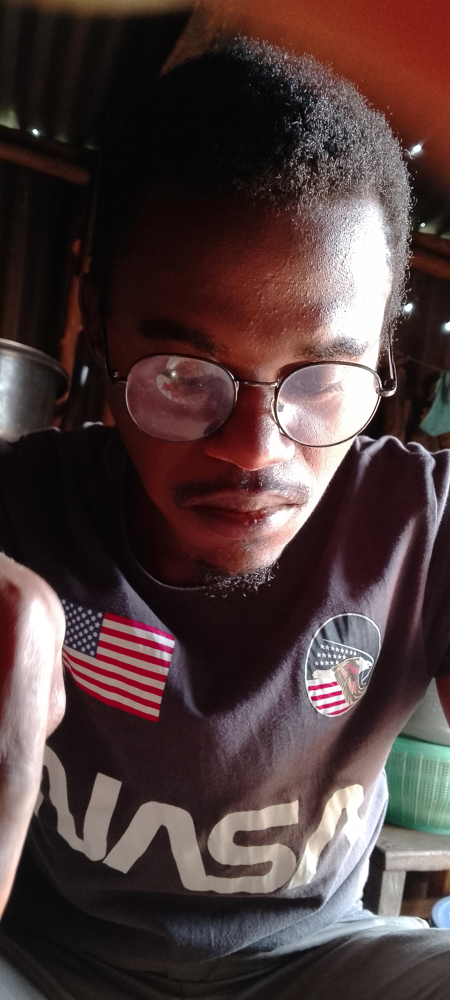

Welcome to My Profile

Hi, my name is Peter Nnamdi Ileh. I am a student at ENSG currently learning full-stack web development at Turing Tech LLC.
About Me
I am a motivated, curious and detail-oriented junior cybersecurity professional with a strong interest in protecting digital systems, networks, and data. I am currently building foundational skills in cybersecurity through self-study and hands-on practice, and I am eager to gain real-world experience through an internship opportunity.
I am also an aspiring developer with a keen interest in building secure and efficient web applications. This project marks my first step into mastering the fundamentals of HTML structure.
I value continuous learning and believe that a strong foundation in semantic code is essential for any professional developer.
Personal Facts
- I am passionate about cybersecurity and specifically ethical hacking
- I enjoy logical reasoning and appreciate those who display this ability
- I am a philosophy student and I hold strongly the basic axiom of all logic which is: if you start out on a wrong premise in any reflective activity, you will always end up with the wrong conclusion
- I am a student of the Bible and emphasizes proper and contextual interpretaion of it. I believe that to lift a text from the context becomes a pretext (context refers to “the connection of thought that a passage bears to the larger discussion of which it is a part,”) In trying to understand a biblical passage, the interpreter must be alert to what is said (content), how it is said (form), and in what situation it is said (life setting). “How something is said is often as important as what is said.
- One thing I like about myself is that I may not be self-aware of my shortcomings in certain areas, but if someone holds up a mirror, I am not afraid to look
Academic History
| School Name | Year | Qualification/Level |
|---|---|---|
| Google cybersecurity Professional course | 2024 | Google cybersecurity certificate |
| National Open University | 2026 | B.A Philosophy |
| Abesan Senior Secondary School | 2016 | WAEC / NECO |
Hobbies & Interests
When I am not hacking, coding or studying, I spend my time engaging in various activities that keep me productive and relaxed:
- Philosophizing with disciplined minds
- Watching Movies
- Traveling
- Farming/Gardening
- Listening to podcasts